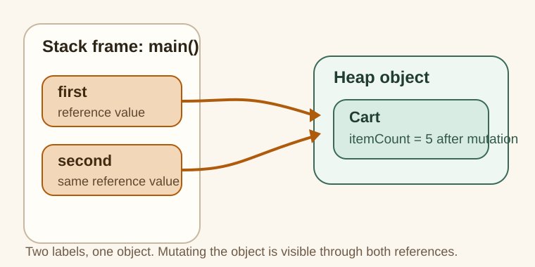

Why This Exists
This topic exists because many Java mutation bugs come from confusing the variable with the object.
The Pain Before It
Learners often ask:
"I changed second. Why did first also change?"
That confusion comes from not separating:
- local variable slot
- reference value
- heap object
Java Creator Mindset
In Java, the local variable is not the object. It only holds the value needed to reach the object.
How You Might Invent It
If every local variable copied the whole object, sharing and method calls would become expensive and awkward.
Java instead keeps objects separate and lets local variables hold references.

What to notice in the picture:
firstandsecondare separate local variables- both arrows point to the same
Cartobject - mutating the object through one reference is visible through the other
Naive Attempt
The naive mental model is:
"Two variables means two objects."
Why It Breaks
That breaks the moment one reference is assigned from another:
Cart first = new Cart(2);
Cart second = first;
Now you have two labels for one shared object.
Final Java Solution
Trace the arrows, not the variable names.
If two references point to one object, one mutation can be observed through both.
Code
Run It
Run the example and watch the shared Cart object after second.itemCount = 5.
Expected Result
first.itemCount = 5second.itemCount = 5
Walkthrough
firstpoints to a newCartsecond = firstcopies the reference value, not the objectsecond.itemCount = 5mutates the shared heap object- reading through
firstshows the same object state
Mental Model
Use this sentence:
"References are labels that can point to the same object; mutation changes object state, not the label itself."
Mistakes
- saying "the variable lives on the heap"
- saying "Java is pass-by-reference" instead of explaining reference values
- confusing reassignment with mutation
Tradeoffs
This model makes Java easier to reason about, but only if you trace references deliberately instead of relying on names.
Use / Avoid
Use It When
- debugging shared-state surprises
- learning parameter passing
- preparing for collections and concurrency discussions
Avoid It When
- you are repeating stack/heap words without drawing the reference flow
Summary
After this topic, you should be able to explain exactly why two variables can show the same mutated value without claiming that Java copied the object twice.
Why This Matters
This is one of the fastest ways to improve JVM interview answers, because many later topics depend on correct shared-state intuition.
Next Topic
Continue into class loading and GC topics once the reference model feels stable.